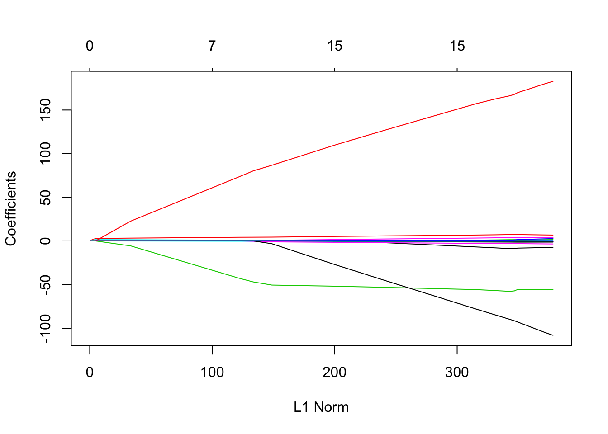

Kapitel 4 Least Absolute Shrinkage And Selection Operator (LASSO)
Das lineare Modell
\[\begin{equation} y_i = \beta_0 + \sum_{j=1}^p \beta_jx_{ij} + \epsilon_i \label{eq:StandardLinMod} \end{equation}\]für eine Beobachtung \(i\) (\(i=1,\ldots,n\)) wird zur Modellierung von Zusammenhängen zwischen den erklärenden Variablen \(x_{i1},\ldots,x_{ip}\) und der Zielgrösse \(y_i\) verwendet. In einem Regressionsmodell werden die unbekannten Parameter \(\beta_j \ (j=0,\ldots,p)\) mit Least Squares geschätzt.
Die \((p+1)\) Werte \(\beta_0, ..., \beta_p\) und die Resteffekte \(\epsilon_i\) sind unbekannt. Es wird angenommen, dass die Werte der erklärenden Variablen (\(x_{i1}, x_{i2}, ..., x_{ip}\)) exakt, d.h. ohne Messfehler oder andere Ungenauigkeiten, bekannt sind. Für einen Datensatz mit \(n\) Beobachtungen werden die resultierenden \(n\) Gleichungen vorzugsweise in Matrix-Vektor-Schreibweise notiert.
\[\begin{equation} y = X\beta + \epsilon \label{eq:StandardLinearModelMatrixVektor} \end{equation}\]4.1 Stochastische Restkomponente
Die \(n\) unbekannten Resteffekte im Vektor \(\epsilon\) werden als zufällige Effekte modelliert, wobei angenommen wird, dass sich diese Resteffekte im Mittel aufheben, d.h., dass deren Erwartungswert \(E(\epsilon) = 0\) ist. Die Streuung der Resteffekte wird im Standardmodell als konstant angenommen. Für die Covarianz des Vektors der Resteffekte bedeutet das, dass \(var(\epsilon) = I*\sigma^2\) ist. Die Varianzkomponente \(\sigma^2\) ist neben den Koeffizienten im Vektor \(\beta\) ein weiterer unbekannter Parameter, welcher von den Daten geschätzt werden muss.
4.2 Parameterschätzung
Unter der Annahme, dass die Matrix \(X\) vollen Kolonnenrang hat, d.h. die Anzahl Beobachtungen \(n\) grösser ist als die Anzahl Parameter (hier \(p+1\)) lassen sich die unbekannten Parameter \(\beta\) mit Least Squares schätzen. Der Least Squares Schätzer \(\hat{\beta}\) für \(\beta\) wird berechnet aus
\[\begin{equation} \hat{\beta} = argmin_{\beta}||y - X\beta||^2 \label{eq:LsEstimateBeta} \end{equation}\]wobei \(||.||\) für die Euklidsche Norm (Länge) im \(n\)-dimensionalen Raum steht. Wird das Minimierungsproblem in Gleichung () aufgelöst, dann resultiert der folgende Ausdruck für \(\hat{\beta}\)
\[\begin{equation} \hat{\beta} = (X^TX)^{-1}X^Ty \label{eq:LsEstimateBetaSol} \end{equation}\]Betrachten wir den Ausdruck in Gleichung () wird klar, weshalb die Matrix \(X\) vollen Kolonnenrang haben muss, da nur so die Inverse \((X^TX)^{-1}\) berechnet werden kann.
4.3 Alternativen zu Least Squares
Das lineare Modell () erweist sich in der Praxis als sehr brauchbar. Mit der Least Squares-Technik besteht auch eine einfache und sehr gut etablierte Methode zur Parameterschätzung. In kürzerer Vergangenheit auch mit dem Aufkommen des Phänomes von “Big Data”, welches das systematische Sammeln von grossen Datenmengen ermöglicht, treten häufiger Probleme auf, bei welchen die im einleitenden Abschnitt aufgestellte Bedingung an Least Squres (\(n > p\)) nicht zutrifft.
Da wir die positiven Eigenschaften des linearen Modells gerne beibehalten möchten, wurde nach Alternativen zu Least Squres gesucht. Diese möglichen Alternativen können in drei Kategorien eingeteilt werden.
- Subset Selektion: Aus den \(p\) erklärenden Variablen wird ein Subset von “relevanten” Variablen ausgewählt. Alle anderen Variablen werden ignoriert. Die relevanten Variablen werden oft aufgrund der Signifikanz des geschätzten Regressionskoeffizienten \(\beta_j\) identifiziert.
- Regularisierung (Shrinkage): Alle \(p\) erklärenden Variablen werden verwendet. Die geschätzten Regressionskoeffizienten werden durch bestimmte Techniken gegen den Nullpunkt “gedrückt”. Dieser Prozess wird als Schrumpfung (Shrinkage) bezeichnet. Die so erzeugte Reduktion der Variabilität der Schätzwerte wird als Regularisierung bezeichnet.
- Dimensionsreduktion: Die \(p\) erklärenden Variablen werden zu \(m\) Linearkombinationen reduziert. Diese Reduktion kann mit Techniken, wie Principal Components Analysis oder Faktoranalyse gemacht werden.
4.4 Lasso
Es gibt Schätzverfahren, welche mehrere der oben genannten Alternativen zu Least Squares kombinieren. Ein Beispiel dafür ist LASSO. LASSO steht für Least Absolute Shrinkage and Selection Operation und kombiniert “Subset Selection” und Regularisierung. Die Regularisierung wird durch das Hinzufügen eines Terms zu den Rest-Summenquadraten (\(RSS\)), welche bei Least Squares minimiert werden. In Gleichung () haben wir gesehen, wie \(RSS\) verwendet werden zur Berechnung der Least Squares Schätzer
\[\begin{eqnarray} \hat{\beta}_{LS} & = & argmin_{\beta}||y - X\beta||^2 \nonumber \\ & = & argmin_{\beta} \left\{\sum_{i = 1}^n\left(y_i - \beta_0 - \sum_{j=1}^p \beta_j x_{ij} \right)^2\right\} \nonumber \\ & = & argmin_{\beta} RSS \label{eq:LsEstimateBetaExpandRSS} \end{eqnarray}\]4.4.1 Regularisierung bei LASSO
Bei LASSO wird nun zu \(RSS\) ein sogenannter Strafterm (penalty term) hinzugefügt. Dieser Strafterm beträgt \(\lambda\sum_{j=1}^p|\beta_j|\). Der Term wird deshalb als Strafterm bezeichnet, weil er mit steigender Summe der Absolutbeträge aller \(\beta_j\) immer grösser wird. Diese führt zum gewünschten Effekt der Regularisierung. Das heisst durch das Hinzufügen dieses Strafterms werden die Absolutbeträge und somit die Variabilität der Koeffizientenschätzungen begrenzt, was der eigentliche Sinn und Zweck der Regularisierung ist.
In Formeln ausgedrückt, lauten die geschätzten Regressionskoeffizienten für LASSO, wie folgt:
\[\begin{eqnarray} \hat{\beta}_{LASSO} & = & argmin_{\beta} \left\{\sum_{i=1}^n\left(y_i - \beta_0 - \sum_{j=1}^p \beta_j x_{ij} \right)^2 + \lambda\sum_{j=1}^p|\beta_j| \right\} \nonumber \\ & = & argmin_{\beta} \left\{RSS + \lambda\sum_{j=1}^p|\beta_j|\right\} \label{eq:LsEstimateBetaLASSO} \end{eqnarray}\]4.4.2 Subset Selection bei LASSO
Wie schon im vorangegangenen Abschnitt beschrieben, dient der Strafterm \(\lambda\sum_{j=1}^p|\beta_j|\) zur Regularisierung der geschätzten Koeffizienten \(\beta_j\) im linearen Modell. Der Strafterm spielt auch eine entscheidene Rolle bei der Subset Selection. Dadurch, dass der Strafterm die Absolutbeträge der Koeffizienten \(\beta_j\) summiert, werden die Schätzungen von gewissen Koeffizienten explizit auf Null gesetzt. Weshalb dieser Effekt der Subset Selection bei LASSO eintritt kann mit folgender Abbildung (siehe nächste Seite) erklärt werden.
In dieser Abbildung sind nur zwei erklärende Variablen gezeigt und somit ist \(p=2\). Die Koeffizienten zu den erklärenden Variablen werden in der Abbildung mit \(b\) und nicht mit \(\beta\) bezeichnet. Unter der Annahme, dass wir unendlich viele Daten hätten, wäre der Schätzer der Koeffizienten \(b_j\) mit minimalem Fehler am Punkt, welcher in der Abbildung mit \(\hat{b}\) bezeichnet ist. Die grünen Ellipsen um diesen Punkt \(\hat{b}\) sind die Linien mit konstantem Fehler. Die rote Linie steht für die Grenze, welche durch den Strafterm aus LASSO entsteht. Das heisst geschätzte Koeffizienten können nur links dieser roten Linie liegen. Da wir den geschätzten Koeffizienten \(\hat{b}_j\) einerseits minimalen Fehler erreichen wollen und auf der anderen Seite innerhalb der Regularisierungsgrenzen sein müssen, liegen die besten Schätzer für \(b_j\) am Schnittpunkt zwischen den grünen Ellipsen und der roten Linie. Durch den Verlauf der roten Linie ist die Wahrscheinlichkeit, dass sich die grünen Ellipsen und die rote Linie auf einer Koordinatenachse schneiden sehr hoch. Schneiden sich die grünen Ellipsen und die rote Linie auf einer Koordinatenachse, dann wurde ein Schätzer für einen Koeffizienten \(b_j\) auf Null gesetzt und somit haben wir den gewünschten Effekt der Subset Selection erreicht.
4.5 Bestimmung von \(\lambda\)
Der Strafterm, welcher in Gleichung () eingefügt wurde und für die Regularisierung bei LASSO verantwortlich ist, enhält eine Variable \(\lambda\). Diese Variable bestimmt das Ausmass der Regularisierung und muss als zusätzlicher Parameter aus den Daten bestimmt werden. Für die Bestimmung von \(\lambda\) wird eine sogenannte Kreuzvalidierungsprozedur (cross validation) verwendet. Bei einer Kreuzvalidiuerng werden die Beobachtungen zufällig in ein sogenanntes Trainings-Set und in ein Test-Set unterteilt, wobei das Test-Set meist weniger Beobachtungen enthält als das Trainings-Set. Mit dem Trainings-Set werden dann die Koeffizienten \(\beta_j\) geschätzt. Dann werden für vorher bestimmte Werte von \(\lambda\) die Beobachtungen im Test-Set vorhergesagt. Der Wert von \(\lambda\), welcher die tiefsten Vorhersagefehler liefert, wird als optimaler Schätzwert von \(\lambda\) betrachtet.
4.6 Analyse mit LASSO in R
In diesem Abschnitt wird gezeigt, wie ein Datensatz mit LASSO in R analysiert werden kann. Wir verwenden dazu den Hitters- Datensatz aus dem Buch von James et al. (2013). Dieser Datensatz enthält als Zielgrösse das Einkommen von Baseballspielern und zu diesen Spielern noch weitere erklärende Variablen. Der Datensatz ist im R-Package ISLR integriert. Für die Analyse werden wir die Funktion glmnet() aus dem gleichnamigen R-Package verwenden. Als erstes installieren wir die beiden Packages und ignorieren alle Records, welche fehlende Daten aufweisen.
if (!require(ISLR)) {
install.packages("ISLR")
require(ISLR)
}
if (!require(glmnet)){
install.packages("glmnet")
require(glmnet)
}
### # records mit fehlenden Daten ignorieren
data(Hitters)
Hitters <- na.omit(Hitters)
dim(Hitters)## [1] 263 20Da wir für die Bestimmung von \(\lambda\) mit Kreuzvalidierung ein Trainings- und ein Test-Set benötigen, bestimmen wir diese durch den Zufallszahlengenerator und der Funktion sample()
set.seed (1)
train <- sample (c(TRUE ,FALSE), nrow(Hitters), rep=TRUE)
test <- (! train )Wir verwenden die Funktion glmnet() zur Modellierung mit LASSO. Für diese Funktion muss das Modell anders spezifiziert werden als für die Funktion lm(). Wir brauchen dazu die Objekte x und y.
x <- model.matrix (Salary ~ ., Hitters)[,-1]
y <- Hitters$SalaryDie vorgegebenen Werte für \(\lambda\) werden in der Variablen grid abgelegt. Es handelt sich um \(100\) Werte zwischen \(10^10\) und \(10^{-2}\).
grid <- 10^ seq (10,-2, length =100)The following statements fits a LASSO model.
lasso.mod <- glmnet (x[train ,],y[train],alpha =1, lambda = grid)
plot(lasso.mod)
Der Plot zeigt, wie sich der Strafterm für verschiedene Werte (durch Farben codiert) verhält. Nun wollen wir den besten Wert für \(\lambda\) bestimmen. Dies wird durch Kreuzvalidierung gemacht.
set.seed (1)
cv.out <- cv.glmnet (x[train ,],y[train],alpha =1)
bestlam <- cv.out$lambda.minDer Anteil an Koeffizienten, welcher durch LASSO null gesetzt wird kann mit folgenden Statements überprüft werden.
out <- glmnet(x, y, alpha = 1, lambda = grid)
lasso.coef <- predict(out, type = "coefficients", s=bestlam )[1:20,]
lasso.coef## (Intercept) AtBat Hits HmRun Runs
## 8.898370e-01 -5.575622e-03 2.007078e+00 0.000000e+00 0.000000e+00
## RBI Walks Years CAtBat CHits
## 0.000000e+00 2.268641e+00 -3.428874e-02 0.000000e+00 0.000000e+00
## CHmRun CRuns CRBI CWalks LeagueN
## 8.315024e-03 2.102106e-01 4.211554e-01 0.000000e+00 1.695962e+01
## DivisionW PutOuts Assists Errors NewLeagueN
## -1.143553e+02 2.343374e-01 0.000000e+00 -6.607899e-01 0.000000e+00References
James, G., D. Witten, T. Hastie, and R. Tibshirani, eds. 2013. An Introduction to Statistical Learning. Springer. doi:10.1007/978-1-4614-7138-7.